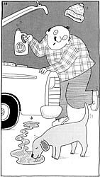

Issue #101 - September/October 1986
Pets find antifreeze tasty - and lethal. How to treat and prevent a widespread but little-known problem.
The nights are getting chilly, reminding you to slip on your jacket and head out to change the antifreeze in your car. Beauregard, your faithful mutt, meets up with you out back and lopes along with you to the garage. Then, as you're flushing out your radiator, you look around to see ol' Beau lapping away at a puddle of antifreeze on the garage floor. What do you do?
"Grab your dog and run to the vet," says Dr. Jill Frucci, D.V.M., editor of The Journal of the American Animal Hospital Association. "There are times when people should hit the panic button and not screw around at home. This is one of them."
You may not know it, but ethylene glycol - the alcohol-like compound found in antifreeze and deicers - is one of the most common substances involved in accidental animal poisonings. And it's lethal. Once it's ingested, enzymes called alcohol dehydrogenates break down the ethylene glycol to form toxic substances that damage the kidneys. The fact that these toxins may lead to renal failure in as little as 48 hours for dogs - or 24 hours for cats - is reason enough to head for the vet immediately if you even suspect that your pet has been downing a few shots of deicer.
"People will try to treat their animal for a day or two at home," says Dr. Frucci. "By the time they bring it to me, there's so much damage to the system - to the blood system and kidneys - that I wind up treating an animal that's comatose."
"It would be a horrible way to die," says Dr. Val Beasley, associate director of the National Animal Poison Control Center. "The animal will be vomiting, there will be kidney pains, it'll get sores in its mouth . . . if you don't treat a poisoned pet quickly, it can get critically ill and then suffer for days before it dies."
For dogs, the minimum lethal dose is four to seven milliliters for about every two pounds of body weight, while only one to two milliliters per two pounds can be fatal to cats. To put the matter another way, if your 10-pound tabby drinks 1-1/2 teaspoons of this stuff, it could kill her.
And drink it she will. Most dogs and cats have a taste for sweets. And ethylene glycol is both sweet and syrupy, almost like an after-dinner liqueur. Once an animal starts licking it up, chances are it'll keep drinking until the antifreeze is gone.
Several researchers have looked into the possibility of adding repellents to ethylene glycol to make it less appealing to pets. The most effective repellents tested were those that were pungent or hot, including such substances as capsicin (it's what makes hot peppers hot ), horseradish extract, and pepperoni enhancer. As yet, though, no manufacturers have acted on these admittedly incomplete studies.
So how can you tell if your pet's been into the antifreeze? Well, just knowing that such poisoning is common - especially in the fall and spring in the northern and midwestern parts of the country - can be an important clue. The first noticeable symptoms may not seem significantly different from any other ailment likely to plague your dog or cat. For instance, the pet will start vomiting, stop eating, drink a lot of water, walk with a stumbling gait, and urinate more often. Should these symptoms show up during the high-risk seasons, a quick trip to the vet is in order. Because, if your dog or cat is suffering from antifreeze poisoning, your vet can treat it . . . with - believe it or not - ethanol, or alcohol.
"The cornerstone of therapy," according to Dr. Gregory Grauer, assistant professor of medicine at the School of Veterinary Medicine at the University of Wisconsin, "is to inhibit the metabolism of the ethylene glycol. That way the compound can be excreted, causing little or no harm. By using ethanol, the vet ties up the enzymes that metabolize the ethylene glycol, and that allows the glycol to pass through the kidneys without breaking down into its more toxic components."
Since it takes approximately three days for an animal to rid itself of ethylene glycol, an ethanol treatment will result in your dog or cat staying inebriated for at least the same amount of time. Researchers are looking for other treatments that don't have the same depressive side effects as ethanol, but keeping your pet antifreeze-free is unarguably the best solution. Here are a few tips:
1. Don't allow your dog or cat in your garage.
2. Park your car on gravel, on grass, or anyplace where there's good drainage - even when you're not flushing out your radiator - so leaking antifreeze won't puddle up.
3. Keep your animal well fed and full of water, so if it does get into any kind of poison, absorption will be slower and you'll have bought more time for treatment.
4. If your dog roams, you might want to ask your neighbors to inform you when they plan to change their antifreeze.
5. If you have a second home and you winterize the plumbing with antifreeze, be sure to flush the system out before you let your pet into the house. Your dog or cat may try to take a drink from the toilet.
|
 TIP NO. 1 |
TIP NO. 2 |
TIP NO. 3 |
|
TIP NO. 4 |
TIP NO. 5 |
|